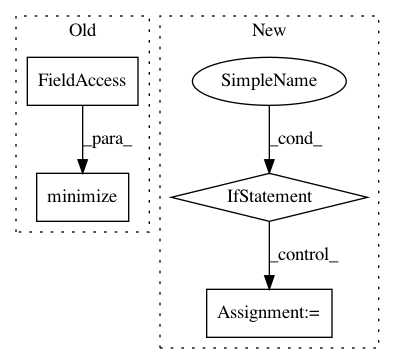

c2c9dddf6d99bfa14b8ffb65b507a6be50b0ad6e,tensorforce/models/pg_model.py,PGModel,tf_optimization,#PGModel#Any#Any#Any#Any#Any#Any#Any#,197
Before Change
return loss + regularization_loss
// TODO: time as argument?
baseline_optimization = self.baseline_optimizer.minimize(
time=self.timestep,
variables=self.baseline.get_variables(),
arguments=dict(
states=states,
internals=internals,
reward=cumulative_reward,
update=tf.constant(value=True),
),
fn_reference=self.baseline.reference,
fn_loss=fn_loss,
source_variables=self.network.get_variables()
)
return tf.group(optimization, baseline_optimization)
def get_variables(self, include_non_trainable=False):
After Change
next_internals=next_internals
)
if self.baseline_optimizer is not None:
cumulative_reward = self.fn_discounted_cumulative_reward(terminal=terminal, reward=reward, discount=self.discount)
arguments = self.baseline_optimizer_arguments(
states=states,
internals=internals,
reward=cumulative_reward,
)
baseline_optimization = self.baseline_optimizer.minimize(**arguments)
optimization = tf.group(optimization, baseline_optimization)
return optimization
def get_variables(self, include_submodules=False, include_nontrainable=False):
model_variables = super(PGModel, self).get_variables(
In pattern: SUPERPATTERN
Frequency: 3
Non-data size: 4
Instances
Project Name: reinforceio/tensorforce
Commit Name: c2c9dddf6d99bfa14b8ffb65b507a6be50b0ad6e
Time: 2018-02-08
Author: aok25@cl.cam.ac.uk
File Name: tensorforce/models/pg_model.py
Class Name: PGModel
Method Name: tf_optimization
Project Name: deepchem/deepchem
Commit Name: 9c51193d4203f796c2adeca69b29a4ea168d7ceb
Time: 2019-06-20
Author: peastman@stanford.edu
File Name: deepchem/models/keras_model.py
Class Name: KerasModel
Method Name: fit_generator
Project Name: IBM/adversarial-robustness-toolbox
Commit Name: 536e6e6a548eac640ca08492d386511aafaea8e7
Time: 2020-04-10
Author: beat.buesser@ie.ibm.com
File Name: art/attacks/evasion/feature_adversaries.py
Class Name: FeatureAdversaries
Method Name: generate